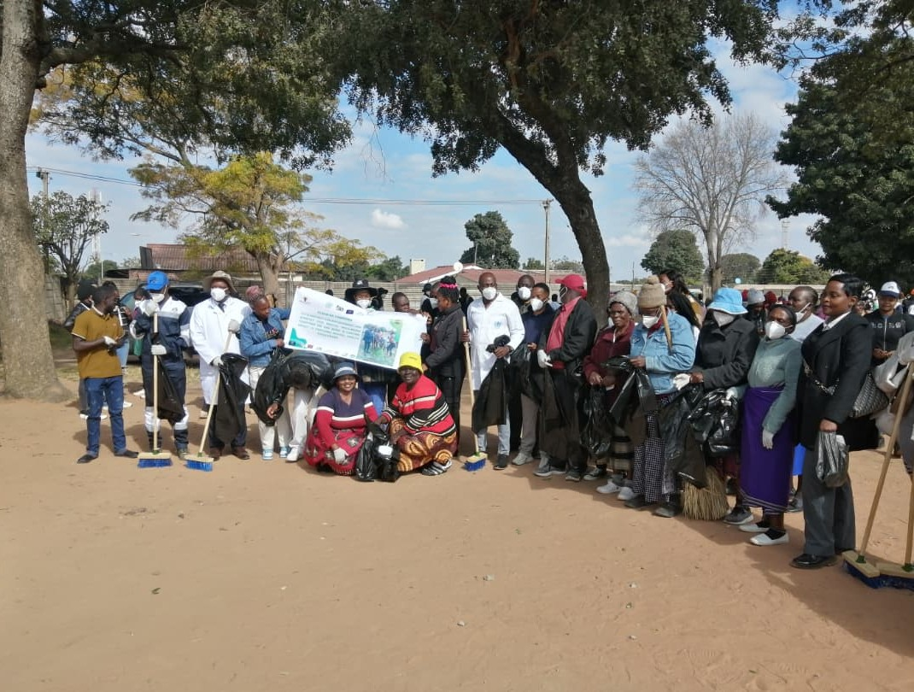
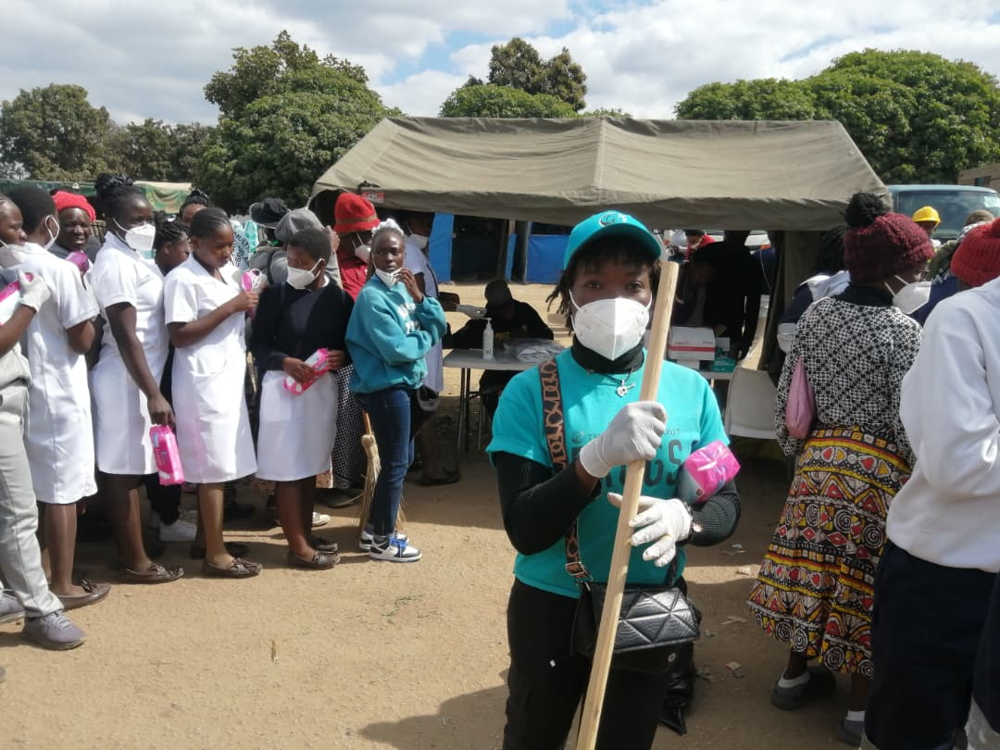
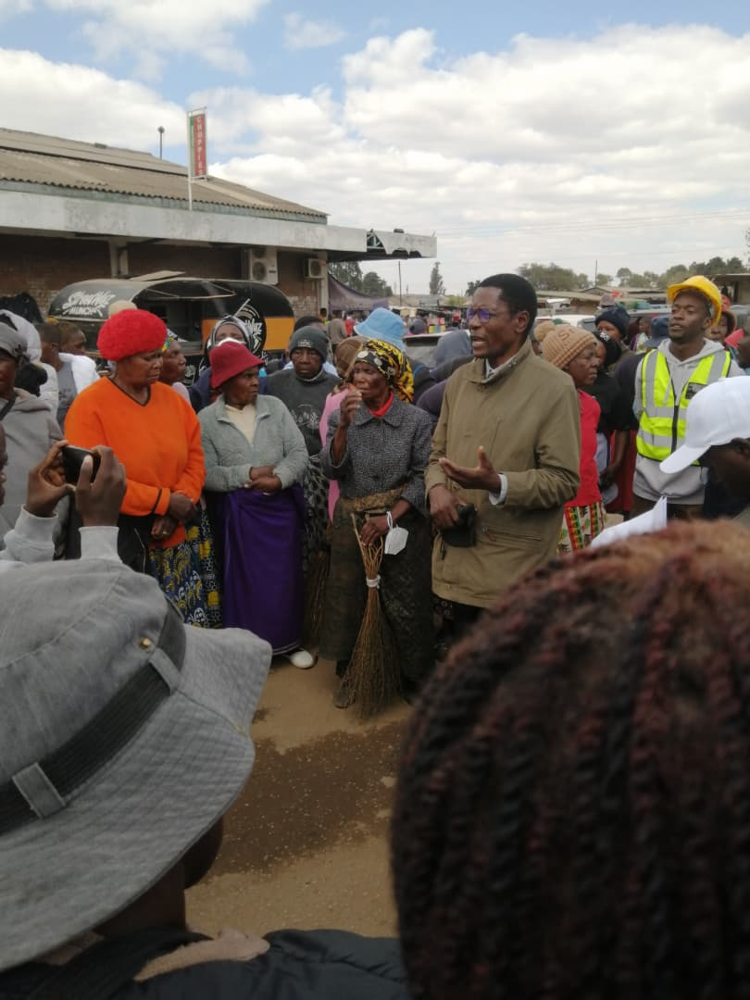
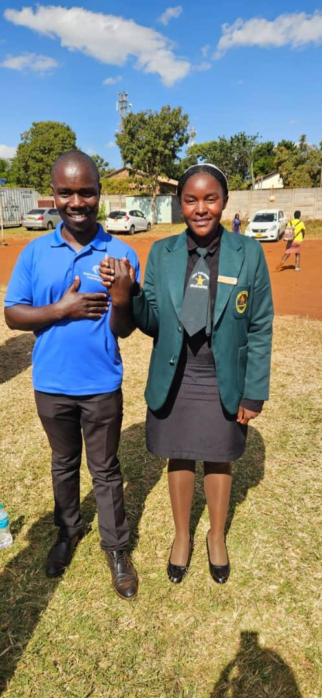
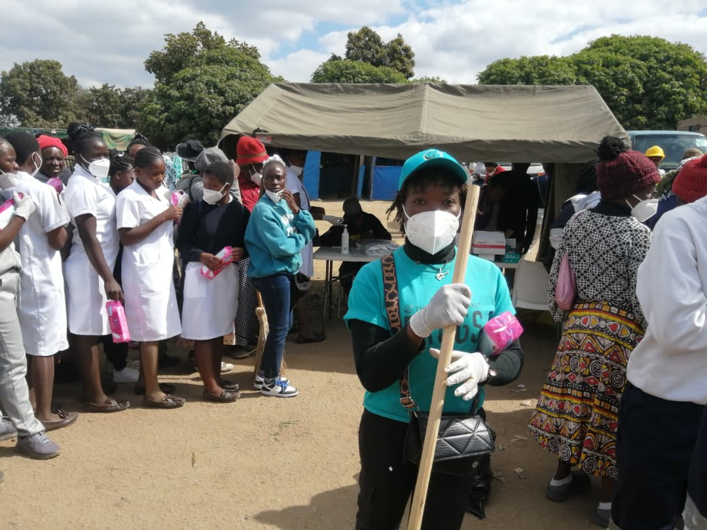
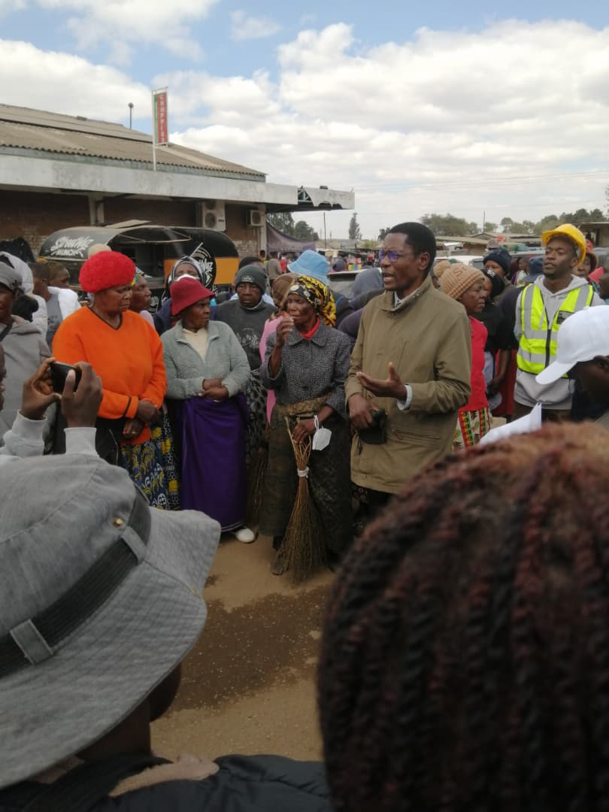
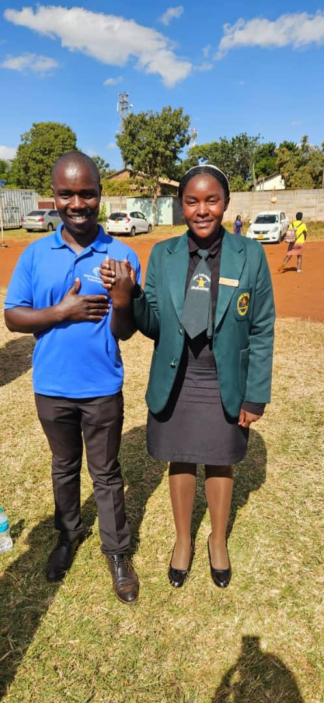

Mabvuku/Tafara Clean-up campaign

On the 5th of June we managed to host a clean-up campaign in Mabvuku/Tafara in collaboration with
various stakeholders, organisations, stakeholders, Councillor’s, District Office, and Community
Development Committee.
One of our partners (AHF Zimbabwe) who were at the program managed to pitch a tent and do HIV
testing, STI screening and treatment, and Condoms distribution:
The statics for the service which AHF Zimbabwe delivered to the community were as follow:
Young People’s Power (AHF Zimbabwe)
25 tested HIV
25 screened for STI
4 had symptoms and got referred for treatment
48 pads got distributed to young girls.
At the program there was various groups including newly formed group of Community Power Voices
(CPV) which is under AHF Zimbabwe. They also managed to advocate for various topics include safe
sex, saying no to drugs, early child marriages etc. were helped them to get tip offs on drug dealers
which are around Mabvuku and also they distribute nearly 500 male condoms to money changers,
mahwindi, car wash, and into car parks.
Succeses of the program
We have managed to create a strong engagement between the community and its service deliveries which were at the program, which helped the community to know the exactly place to go when they need help which was the major reason for the clean-up campaign.
Guests who were at the program
- MR. Guzha (District Officer)
- MR. Meda (MP Sakupwanya Rep)
- MRS. Muneno (MRS. Chuma)
- MR. Nyakudya (Ward 21 Councillor)
- MRS. Kachembera (Social Service)
Lastly we want take this opportunity to appreciate everyone who was at the program and also helped us to make this program success, To our beloved partners and friends we thank you so much.
Conclusion
So much appreciations goes to National AIDS Council, City of Harare, The Women
Emancipation Dream Trust, Global Peace, Ministry of Youth, Climate Control, Vision Of All,
AHF Zimbabwe, PS skills Development, Support Generations, For Youths By Youths, Destiny
Mission Organization, Community Development Committee, and The Community at its own.
With thanks and kind regards
MR. T. Kurimbanawo
Mental Health Sustainability
Director& Founder
Campaign Photos

 




